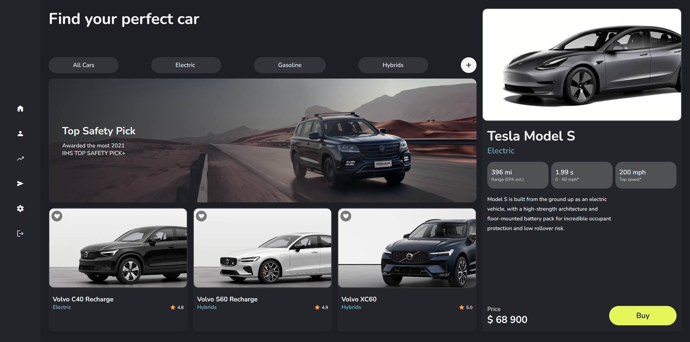
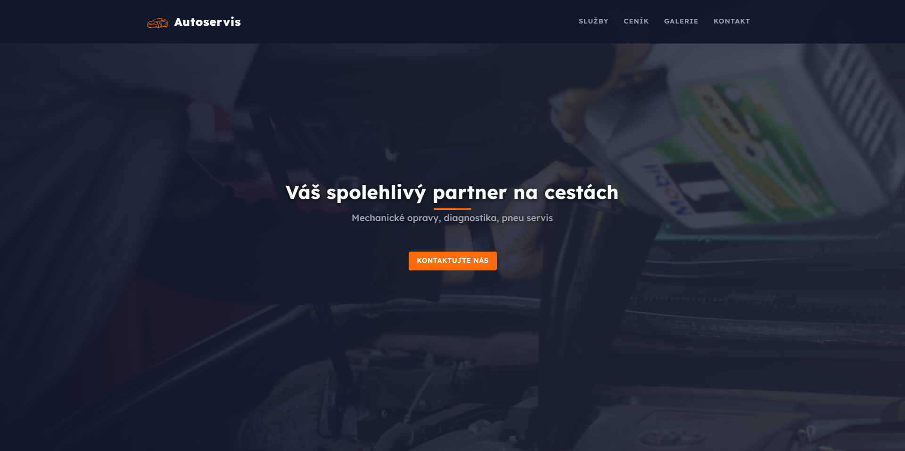

project one
project one
Vibrant Visions
A colorful exploration of user interfaces, blending bold typography and dynamic imagery for a visually captivating experience.

project two
Auto Dealership
Designový koncept webové aplikace pro vyhledávání automobilů, demonstrující uživatelské rozhraní a základní navigaci.

project three
Autoservis
Profesionální webové stránky pro autoservis. Přehledně prezentují nabídku služeb, ceník a kontaktní údaje s důrazem na snadnou orientaci pro zákazníky.